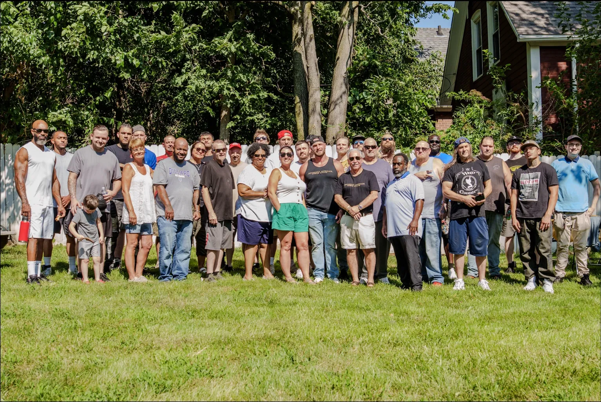
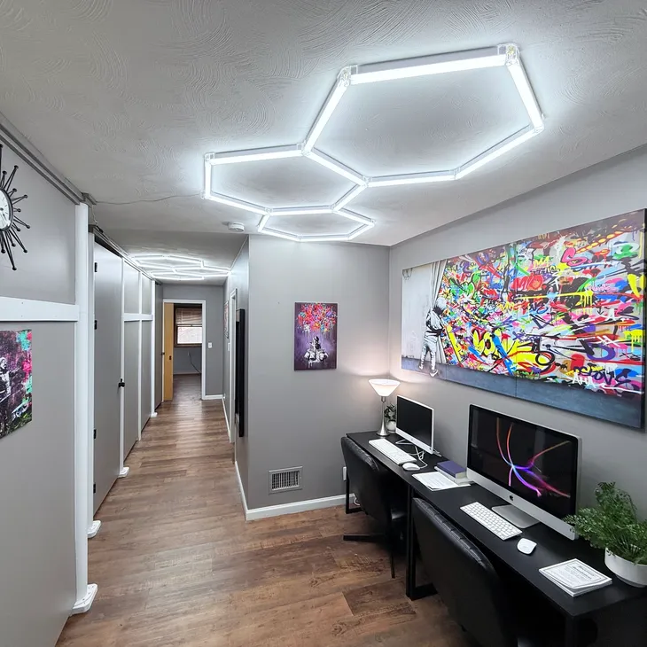
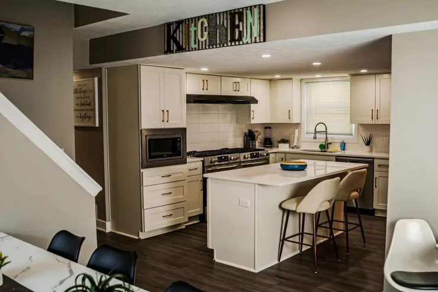
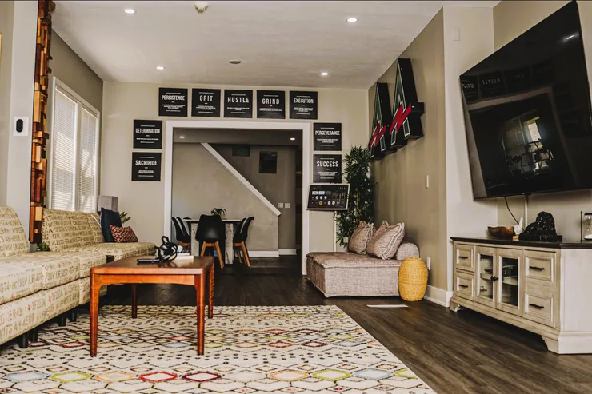
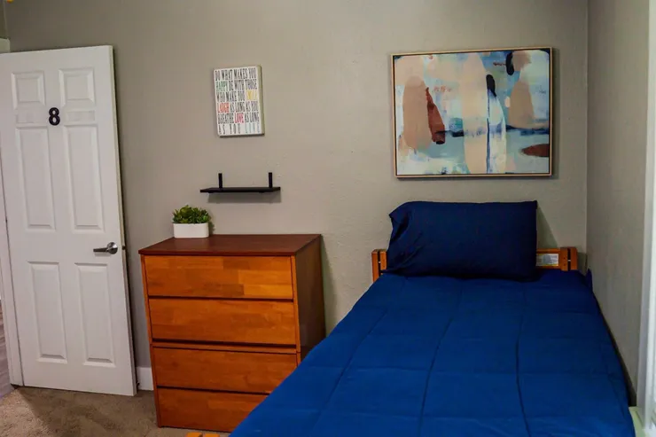
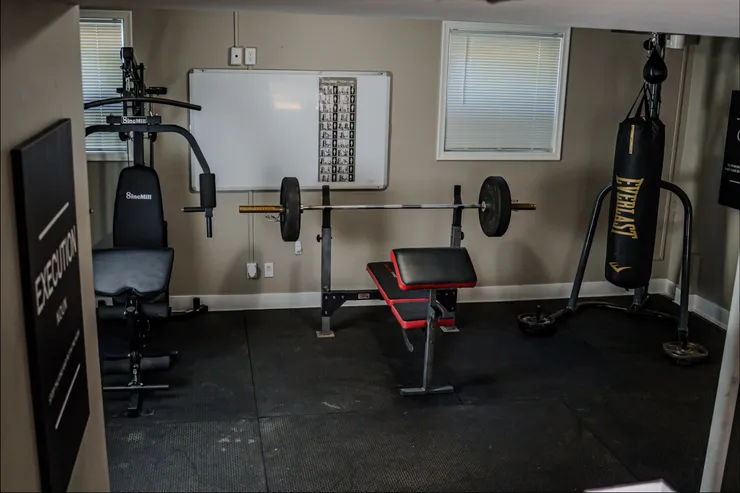
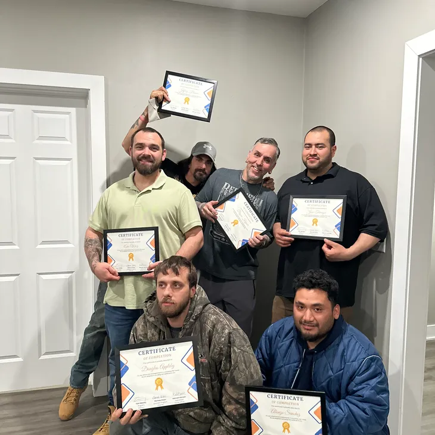

Stage 1
Entry
Stabilize, orient, and establish a starting point inside a clear structure.
A structured path to independent living
Different Approach Omaha is not just housing. It is a staged reentry system designed to help people move from entry into greater responsibility, stronger habits, and long-term independence.

The Path
Each stage is designed to meet residents where they are, create a practical next step, and build toward more independence over time.
Short path overview
Residents move through a defined path that increases responsibility over time while keeping support close at every stage.
Stage 1
Stabilize, orient, and establish a starting point inside a clear structure.
Stage 2
Build consistency, stronger daily habits, and dependable accountability.
Stage 3
Strengthen ownership, decision-making, and readiness for greater independence.
Outcome
Transition forward with stronger routines, support systems, and momentum.
Why Different Approach
Different Approach Omaha is designed as a structured reentry system. The goal is not simply to house people for a season. It is to help them rebuild with direction, accountability, and practical support that connects to real life.
Clarity
Residents are not left guessing what comes next. The housing path creates a visible roadmap from entry to greater independence.
Practicality
Help extends beyond housing and includes communication, resources, transportation pathways, education support, and practical life rebuilding.
Purpose
Expectations are clear, but the goal is progress. Structure is used to create stability, strengthen follow-through, and help people keep moving.
Support ecosystem
Different Approach Omaha pairs staged housing with practical support that helps residents rebuild real-life stability. The services are connected on purpose: basic needs, communication, work, education, health routines, and staff support all work together so progress has a better chance to hold.

Stability
Practical guidance around work readiness, follow-through, and the daily consistency needed to move toward financial stability.
Growth
Help exploring training, school, and local education opportunities, including MCC-related pathways when they fit a resident’s goals.
Recovery
Support focused on repairing financial standing, understanding next steps, and building habits that can strengthen long-term stability.
Mobility
Help thinking through realistic transportation options so work, appointments, education, and daily responsibilities are easier to maintain.
Essentials
Basic needs support that reduces pressure while residents focus on structure, accountability, work, health, and the next practical step.
Routine
Access that supports movement, health, discipline, and a more constructive routine during the rebuilding process.
Communication
A clearer channel for maintenance issues, overnight requests, grievances, questions, and other needs that should not get lost.
People
Staff help residents understand expectations, communicate clearly, use available resources, and keep moving when practical barriers come up.
Grounded in lived experience
Different Approach Omaha comes from firsthand understanding, hard-earned perspective, and a refusal to settle for shallow solutions for people trying to start over.
Read the full storyTeam preview
The work is rooted in support, lived perspective, and a commitment to building a system that helps people move forward in a real and sustainable way.
Leadership
Founder and system builder focused on structured reentry, practical progression, and creating a path people can actually follow.
Support
Support-focused team member helping residents navigate daily needs, questions, and forward movement.
Communication
Team support presence helping keep communication clear and the resident experience grounded.
Take the next step
How it works
The program is designed to help people enter with clarity, understand what is expected, and move through a real progression toward more stable and independent living.
Who enters
The system is built for people rebuilding stability and needing a setting with clear expectations, day-to-day structure, and a path that leads somewhere.
How placement works
Entry into the program begins with orientation and placement into the stage that best fits where someone is starting, so support and structure can be matched to the moment.
Residents enter the system, get grounded in the process, and understand the expectations, communication flow, and next steps from the beginning.
Placement is tied to where a person is starting, not to a one-size-fits-all model. The goal is to begin with the right level of structure and build from there.
Day-to-day life is shaped by routine, communication, and accountability so residents can build consistency instead of operating in chaos.
Structure is paired with practical help, staff support, and tools that remove barriers without removing responsibility.
As residents demonstrate consistency and ownership, they move through stages with greater responsibility and increasing readiness for independence.
Progress is not just time spent in housing. It looks like steadier routines, stronger follow-through, better communication, and more responsibility over time.
The goal is a stronger transition into independent living with practical systems, more stability, and momentum that can hold beyond the program.
Housing path
The Path Explorer gives a stage-by-stage view of the structure, expectations, support, and intended outcome at each point in the system.
Current stage
Starting with stability, orientation, and a clear baseline.
Entry




Resident app
The resident app is part of how the system stays organized day to day. It gives residents and staff a shared place for communication, payment clarity, requests, progress information, and the practical coordination that helps expectations stay clear.
Financial clarity
Residents can keep payment-related information easier to understand in one place, reducing confusion and supporting better planning.
Visibility
Progress-related information stays organized so expectations, next steps, and follow-through are easier to see and discuss.
Connection
Messaging and updates help residents stay connected with staff, ask questions, and avoid missed information.
Coordination
Maintenance issues, overnight requests, grievances, and other needs can move through a clear request channel instead of informal guesswork.
The app is not meant to replace people or turn support into surveillance. It is a coordination layer that helps residents and staff keep the same information in view, follow up more consistently, and focus on progress.
About / team
The mission is rooted in the belief that people rebuilding their lives need more than temporary housing. They need structure that is clear, support that is practical, and a path forward that respects how hard real change can be.
Different Approach Omaha exists to help people rebuild through structured housing, practical support, and a clear path toward independent living. The work is grounded in accountability, dignity, and the belief that progress becomes more possible when people know what is expected and where they are headed.
Real reentry support requires more than a bed. It requires a process, expectations, practical help, and people willing to stay engaged while residents build consistency one stage at a time.
Different Approach Omaha was shaped by firsthand understanding of what it means to start over and how difficult it can be to rebuild when housing, work, transportation, communication, and daily structure are all unstable at the same time. The program reflects the reality that reentry is not solved by slogans or short bursts of support.
That origin is the reason the path is intentional, the expectations are clear, and the support is practical. Jake’s vision is not to make the process sound easy. It is to create a framework where people can stabilize, take responsibility, receive real support, and keep moving toward independent living with more than hope alone.

Founder
Jake is central to the vision and direction of the program. His leadership is focused on building a structured reentry path that is practical, understandable, and strong enough to help people move forward.
Resident support
Angel helps support the day-to-day resident experience through communication, practical help, and steady follow-through when residents need clarity.
Program support
Nichole is part of the support system that helps keep residents connected, informed, and oriented inside the process.
Apply
This form is for people who need housing, people who are unsure whether the program is the right fit, and people helping someone else take the first step. After the request is submitted, the next step is follow-up from the team to understand the situation, answer questions, and discuss the most appropriate path forward.
Contact
Clear contact paths help the team understand why you are reaching out and respond with the most useful next step.
Start with the application form above if you need housing or want to see whether Different Approach Omaha may be the right fit. Use this path if you need help understanding what to do next before submitting.
Go to ApplyReferral sources can share the person’s situation, current needs, timing, your contact information, and the best way for the team to follow up.
Start a ReferralUse this path for general questions about the program, housing path, support services, the app, eligibility, or next steps.
Ask a QuestionReach out if you want to support the mission, help meet practical resident needs, discuss resources, or learn where support would be most useful.
Contact About Support